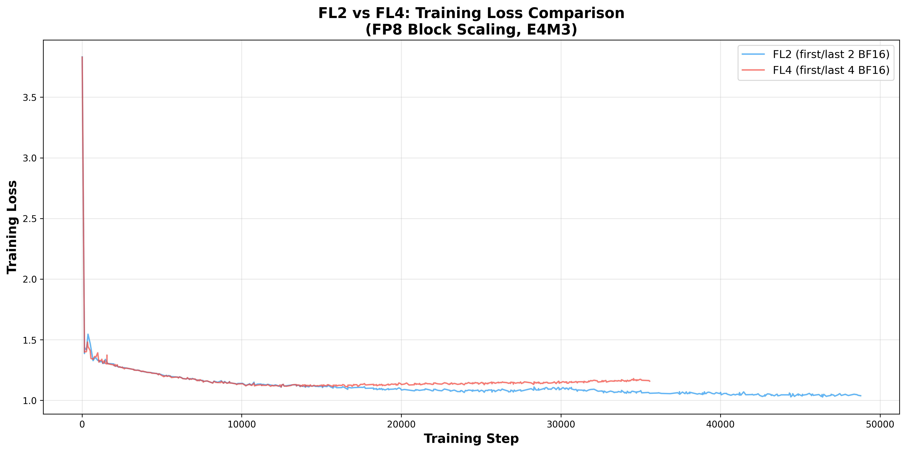
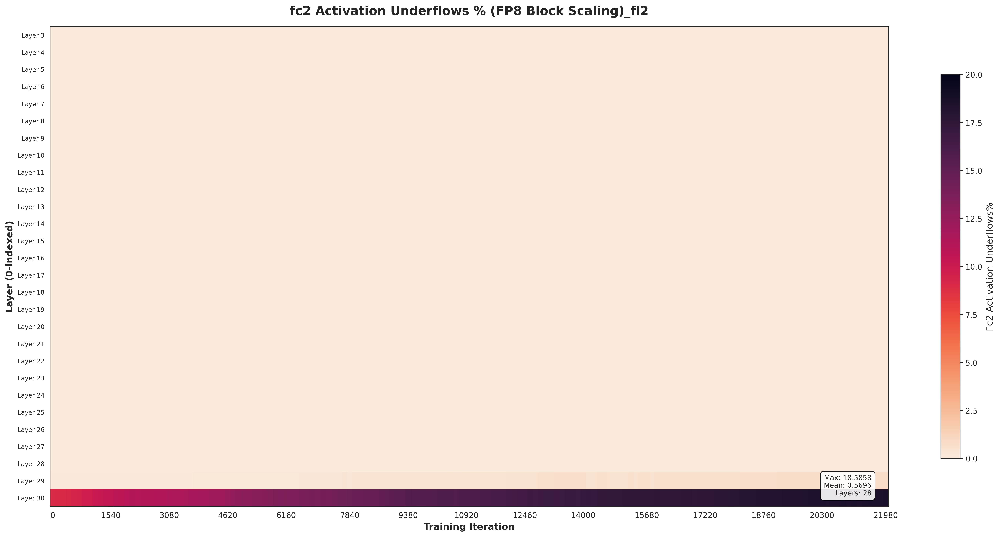
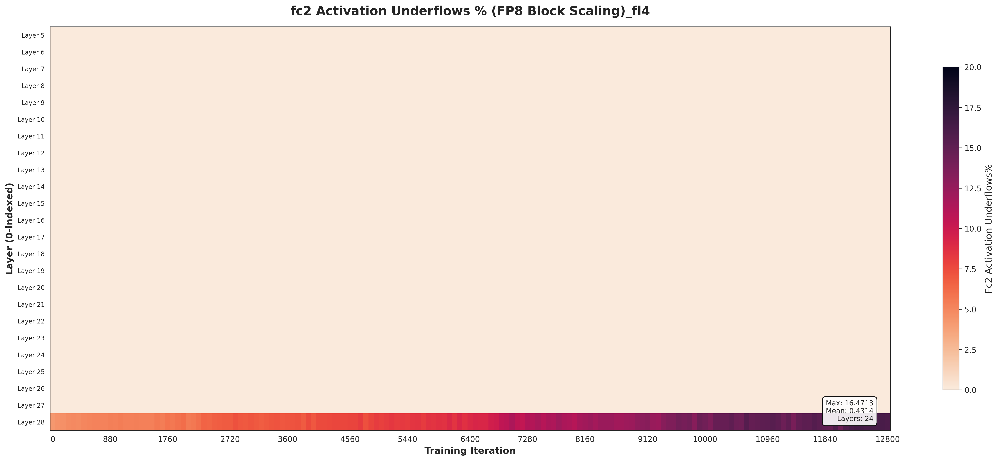
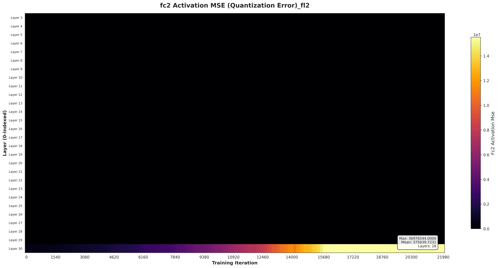
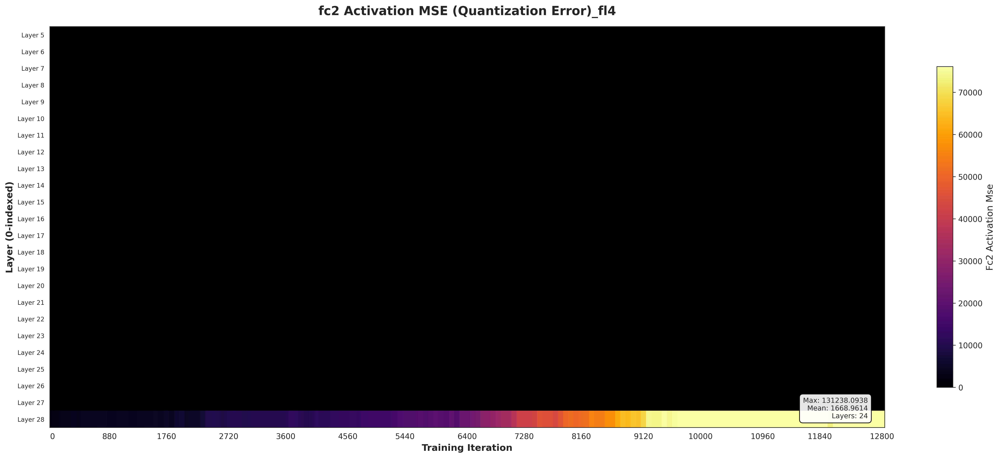
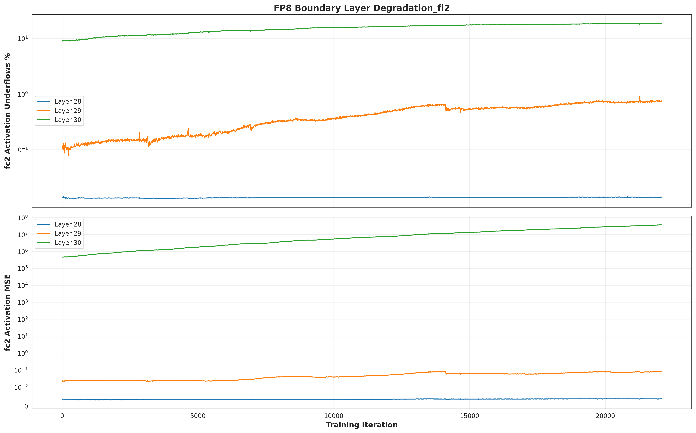
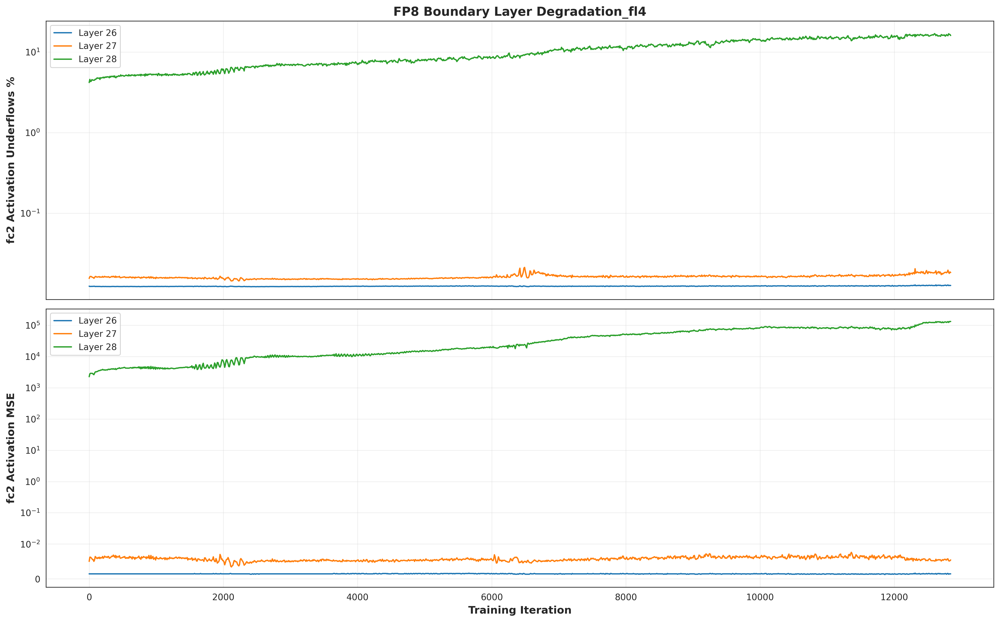

FL2 vs FL4 diagnostic results on OpenGenome2 7B
Savitha Srinivasan — March 2026

WandB loss curves: FL2 (blue) vs FL4 (red). FL2 continues improving; FL4 plateaus.
OG2-7B (Llama 3), 6x8 H100, FP8 E4M3 block scaling, FP32 master weights.
| Config | FP8 Layers | BF16 Layers |
|---|---|---|
| FL2 | 3–30 (28 layers) | 1–2, 31–32 |
| FL4 | 5–28 (24 layers) | 1–4, 29–32 |
| FL2 | FL4 | |
|---|---|---|
| Final loss | 1.04 | 1.16 |
| Steps run | ~49K | ~36K |
| Trend | Still improving | Plateaued / climbing |
The existing gradient underflow heatmaps show values <0.05% across all layers — well within acceptable range. I added activation underflow analysis to look deeper, and found the real issue.
All layers healthy. Gradients are fine.
Severe underflow at the last FP8 layer.

FL2: Layers 3–30 in FP8. Layer 30 reaches 18.6% underflow.

FL4: Layers 5–28 in FP8. Layer 28 reaches 16.1% underflow.

FL2: Layer 30 MSE reaches 37M. All others near zero.

FL4: Layer 28 MSE reaches 133K. All others near zero.

FL2: Layer 30 underflow grows from ~8% to ~18% over 22K steps.

FL4: Layer 28 underflow grows from ~4% to ~16% over 12K steps.
llama3-metagenome-7b.